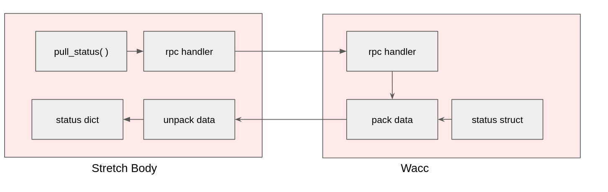

NOTE It is possible to brick the Wacc board by incorrectly configuring the hardware peripherals of the SAMD uC. Therefore, when integrating your custom hardware into the Wacc we strongly recommend emulating the Wacc board until the functionality is complete. The tutorial Wacc Emulation describes how to configure an Adafruit Metro M0 Express to behave as a stand-in for a Wacc board.
NOTE: These tutorials may require the latest version of Stretch Body. If necessary, please update your install.
Integrating Custom Data
In this tutorial we explore how to plumb custom data to and from the Arduino based Stretch Wacc (Wrist + Accelerometer) board. This enables users to integrate custom sensors and actuators on to the Wrist Expansion header.
How Data Transfer Happens in Stretch Body
Data is transferred between Stretch Body Python and the Arduino based firmware using USB based serial.
As an example, consider the transfer of a Status data message from the Wacc to Stretch Body. This involves:
- Stretch Body requests new Status data via
wacc.pull_status() - This generates an RPC call to the Wacc board
- The
statusdata on the Wacc board gets 'packed' and transmitted back to Stretch Body - Stretch Body unpacks the data into the
statusdictionary of the Wacc Python class.
Similarly, data can go the other direction (e.g., Command messages ).

Fortunately, the data transfer is managed automatically for the developer. In order to integrate your custom data you will:
- Extend the firmware
StatusandCommandstructs to include your data - Derive your own class from the Stretch Body
Waccclass that packs and unpacks your custom data
Calculator Example
As a simple example we will extend the Wacc to be an embedded calculator. The implementation is found in the Wacc_Calc Arduino sketch and the corresponding WaccCalc Python class.
Arduino
Define data structures
First, we define the data to be sent back and forth in Common.h of the firmware.
struct __attribute__ ((packed)) Calc_Command{
float var1;
float var2;
uint8_t op;
};
struct __attribute__ ((packed)) Calc_Status{
float result;
};
Our calculator will perform the computation: result=op(var1,var2).
Now add these structs to the Status and Command structs in Common.h:
struct __attribute__ ((packed)) Wacc_Command{
Calc_Command calc;
...
};
struct __attribute__ ((packed)) Wacc_Status{
Calc_Status calc;
...
};
The ordering of the data is important. Your custom data should be at the start of the struct as the Python class will unpack this data first.
Define calculator function
Next we add the calculator function to Wacc.cpp:
float my_calc(uint8_t op, float var1, float var2)
{
if (op==0)
return var1+var2;
if (op==1)
return var1*var2;
if (op==2)
return var1/var2;
return 0;
}
Integrate calculator into the control loop
Finally, we integrate our calculator into the embedded control loop in Wacc.cpp.
The function stepWaccController() in Wacc.cpp is called by Timer5 at 700Hz. The calculator is fairly lightweight so its computation time should not interfere with the existing Wacc timing. Heavier computation would require careful integration with an eye to loop timing.
Add the call to stepWaccController() -- just prior to the Status data being copied out for transmittal back.
void stepWaccController()
{
...
stat.calc.result=my_calc(cmd.calc.op,cmd.calc.var1, cmd.calc.var2);
memcpy((uint8_t *) (&stat_out),(uint8_t *) (&stat),sizeof(Wacc_Status));
}
The variable cmd, which contains the command to the calculator, is automatically updated with fresh data via the RPC mechanism.
Bump protocol versions
The packet definition of data exchanged between Python and the Arduino is tagged with a protocol version. This allows the Python Device to ensure it is exchanging compatible data.
The mainline release of Stretch Firmware starts with protocol version 0 and increments with each new protocol release. To avoid conflicts, for this tutorial we pick an arbitrary large number (99).
In Common.h , we bump from Protocol '0'
#define FIRMWARE_VERSION "Wacc.v0.0.1p0"
to Protocol '99'
#define FIRMWARE_VERSION "Wacc.v0.0.1p99"
Python
Now we will implement WaccCalc which derives from the Wacc Python class.
from stretch_body.wacc import *
from stretch_body.transport import *
class WaccCalc(Wacc):
"""
This class demonstrates how to extend the Wacc class with custom data
See the corresponding tutorial for more information.
"""
def __init__(self,verbose=False):
Wacc.__init__(self,verbose=verbose,
ext_status_cb=self.ext_unpack_status, #Set callback to unpack status
ext_command_cb=self.ext_pack_command) #Set callback to pack command
self._command['calc']={'op':0,'var1':0,'var2':0} #Extend command dictionary with custom fields
self.status['calc'] =0.0 #Extend status dictionary with custom fields
self.valid_firmware_protocol = 'pMyCalc'
def calculate(self,op,var1,var2):
"""
0: addition
1: multiplication
2: division
"""
self._command['calc']['op'] =int(op)
self._command['calc']['var1']=float(var1)
self._command['calc']['var2']=float(var2)
self._dirty_command=True
def pretty_print(self):
Wacc.pretty_print(self)
print 'Calc:',self.status['calc']
def ext_unpack_status(self,s):
"""
s: byte array to unpack
return: number of bytes unpacked
"""
sidx=0
self.status['calc'] = unpack_float_t(s[sidx:])
return 4
def ext_pack_command(self,s,sidx):
"""
s: byte array to pack in to
sidx: index to start packing at
return: new sidx
"""
pack_float_t(s, sidx, self._command['calc']['var1'])
sidx += 4
pack_float_t(s, sidx, self._command['calc']['var2'])
sidx += 4
pack_uint8_t(s, sidx, self._command['calc']['op'])
sidx += 1
return sidx
The class registers two callbacks for packing Command data and unpacking Status data. They are fairly self-explanatory and can be easily extended to match your custom data. Looking at the unpacking code:
def ext_unpack_status(self,s):
"""
s: byte array to unpack
return: number of bytes unpacked
"""
sidx=0
self.status['calc'] = unpack_float_t(s[sidx:])
return 4
, we see the use of unpack_float_t. This, and other functions to unpack data, are found in stretch_body.transport.
It is important that the data types and order match exactly those declared in the firmware. For example in Common.h we have:
struct __attribute__ ((packed)) Calc_Command{
float var1;
float var2;
uint8_t op;
};
, and on the Python side we have
pack_float_t(s, sidx, self._command['calc']['var1'])
sidx += 4
pack_float_t(s, sidx, self._command['calc']['var2'])
sidx += 4
pack_uint8_t(s, sidx, self._command['calc']['op'])
sidx += 1
Test the Calculator - iPython
We're ready to try out our calculator. First,
- Install and setup the Arduino IDE if it isn't already as described in the Updating Firmware tutorial.
- Open the Wacc_Calc Arduino sketch in the Arduino IDE.
- Select the
hello_waccboard, thettyACMxport that maps to the Wacc board. Then burn the firmware as described in the the Updating Firmware tutorial.
Now, lets try it out:
>>$ cd ~/repos/stretch_firmware/tutorial/python/
>>$ ipython
And from iPython
In [1]: import wacc_calc
In [2]: w=wacc_calc.WaccCalc()
In [3]: w.startup()
In [4]: w.calculate(op=0,var1=100.0,var2=200.0)
In [5]: w.push_command()
In [6]: w.pull_status()
In [7]: print 'Result is',w.status['calc']
Result is 300.0
In [8]: w.calculate(op=1,var1=100.0,var2=200.0)
In [9]: w.push_command()
In [10]: w.pull_status()
In [11]: print 'Result is',w.status['calc']
Result is 20000.0
In [12]: w.calculate(op=2,var1=100.0,var2=200.0)
In [13]: w.push_command()
In [14]: w.pull_status()
In [15]: print 'Result is',w.status['calc']
Result is 0.5
Test the Calculator - Script
Alternatively you can use the provided tool, stretch_wacc_calc_jog.py. Here you can use the calculator through the menu.
hello-robot@stretch-re1-100x:~$ cd repos/stretch_firmware/tutorial/python/
hello-robot@stretch-re1-100x:~/repos/stretch_firmware/tutorial/python$ ./stretch_wacc_calc_jog.py
------ MENU -------
m: menu
r: reset board
a: set D2 on
b: set D2 off
c: set D3 on
d: set D3 off
X: do calculation
-------------------
X
---Calculate Op(Var1,Var2) ---
Op=0: Add
Op=1: Mult
Op=2: Div
Enter Op
1
Enter Var1
12
Enter Var2
13
Adding YAML Parameters
The WaccCalc class can use the Stretch Body YAML files as well. For example, add to your stretch_re1_user_params.yaml:
wacc:
calc_scalar: 2.0
Now let's scale the commands to the Arduino according to this YAML parameter. In WaccCalc:
def calculate(self,op,var1,var2):
"""
0: addition
1: multiplication
2: division
"""
self._command['calc']['op'] =int(op)
self._command['calc']['var1']=self.params['calc_scalar']*float(var1)
self._command['calc']['var2']=self.params['calc_scalar']*float(var2)
self._dirty_command=True
Run the iPython as above and you'll see the values multiplied by the YAML scalar.
Final Steps
We want the Stretch Body Robot to use WaccCalc and not Wacc. To do this, add the following to your stretch_re1_user_params.yaml:
robot:
custom_wacc:
py_class_name: WaccCalc
py_module_name: wacc_calc
This tells Robot which module and class to create its Wacc instance from.
Now, test that it works from iPython
In [1]: import stretch_body.robot
In [2]: robot=stretch_body.robot.Robot()
Starting TransportConnection on: /dev/hello-wacc
In [3]: robot.startup()
In [4]: robot.wacc.calculate(op=0,var1=100.0,var2=200.0)
In [5]: robot.push_command()
In [6]: print 'Result',robot.wacc.status['calc']
Result 300.0
In [7]: robot.stop()